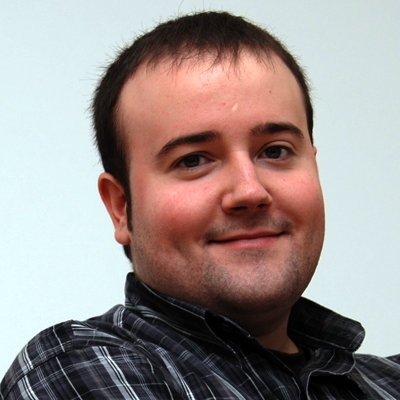

Hello! My name is Jorge Bastida and
I love writing code.
Python & Web enthusiast, author of gluecss.com and dajaxproject.com.
This is what I do.
Python.
Simplicity, elegance, power and extreme flexibility... no words to describe my passion for this beautiful language.
Django.
I love Django, It's an amazing framework and I do enjoy it. I've developed several opensource projects and given a few courses.
JavaScript.
After several years developing dynamic interfaces I've used most of the existing JS frameworks. My favourite? jQuery.
Open Source.
Share with the community as much as possible has been always a priority for me. Visit my github page to check my latest contributions.
Html.
I love the web. I got an html book nine years ago and since then I've developed for the Web both professionally and as a hobby.
CSS.
Clothes for our code. Since my first steps on the Web I've collaborated in the interaction and layout of every project I've been involved.
iOS.
I've developed several iPhone apps using as backend my own RESTful APIs. I really like it, so interesting platform!
PHP.
Everyone has a past. Mine is PHP, one of the first languages that I learned. Since then we have kept a close relationship.
Open Source.
My projects
- Glue Simple command line tool to generate CSS sprites.
- CSSBuster Tool to invalidate external resources linked to a css file.
- django-dajax Library to create asynchronous presentation logic.
- django-dajaxice AJAX libary for django.
Contributed
- Mongoengine Python ODM for MongoDB.
- Diamond System metrics collector that publishes to Graphite.
- Funkload Functional and load testing framework for web applications.
- Flask-Mongoengine MongoEngine flask extension.
- Flask-DebugToolbar A port of the django debug toolbar to flask.
- Jingo-minify Concat and minify JS and CSS for Jinja2 and Django.
 Courses and Talks given.
Courses and Talks given.
- Open Source Modern Web Development. University of Deusto, MSc in Development and Integration of Software Solutions. Bilbao, Spain (May. 2013)
- Django. University of Deusto, MSc in Development and Integration of Software Solutions. Bilbao, Spain (Nov. 2012)
- Things that make me happy, Python + Django Euskal Encounter 20. Bilbao, Spain (Jul. 2012)
- Glue: Command line sprites, 5m Lighting talk. Djangocon Europe, Zurich (Jun. 2012)
- Django. University of Deusto, MSc in Development and Integration of Software Solutions. Bilbao, Spain (May. 2012)
- Things that make me happy, Python + Django Telefónica I+D. Barcelona, Spain (Apr. 2012)
- Dajaxproject.com, 5m Lighting talk. Djangocon Europe, Amsterdam (Jun. 2011)
- 'Desarrollo Web ágil con Python y Django.' Araba Enpresa Digitala. Miñano, Spain (Apr. 2011)
- 'Desarrollo Web ágil con Python y Django.' European Software Institute. Zamudio, Spain (Jan. 2011)
- Django. University of Deusto, MSc in Development and Integration of Software Solutions. Bilbao, Spain (Dec. 2010)
- Django, enjoy developing. e-ghost. Bilbao, Spain (Sep. 2010)
 Experience.
Experience.
- Software Engineer at Streetlife.com (Apr. 2011 to Present)
- Software Engineer at Ideateca S.A. (Sep. 2010 to Apr. 2011)
- Software Engineer and Release Engineer at thecodefarm S.L. (Sep. 2008 to Sep. 2010)
- Co-founder of thecodefarm S.L. (Sep. 2008 to Sep. 2010)
- Software Engineer at Sync.es I+D+i department.(May. 2006 to Oct. 2006)
- Web Developer at Ikusnet S.L.L (Nov. 2003 to Feb. 2005)
 Education.
Education.
- BSc in Computer Engineering (2010), 5-year degree in the speciality of Technical Engineering in Business Computing.
 Conferences.
Conferences.
- Djangocon Europe 2012 (Zurich)
- Djangocon Europe 2011 (Amsterdam)
- Djangocon Europe 2010 (Berlin)
- FOWA, Future of Web Apps 2008 (London)
 Awards.
Awards.
- First prize at the 24-hours Free and Open Source Software (FOSS) Coding competition organized by the Euskal Encounter www.euskal.org, 2010.
- First prize at the 'Alava Emprende 2010 Innovation' Competition organized by the Basque Government www.alavaemprende.com, 2010.
- First prize at the 48-hours Open Data Coding competition 'Desafío Abredatos 2010' Organized by Pro Bono Público and the Basque Government www.abredatos.es, 2010.
 Hobbys.
Hobbys.
- Cooking, Traveling and Fishing.